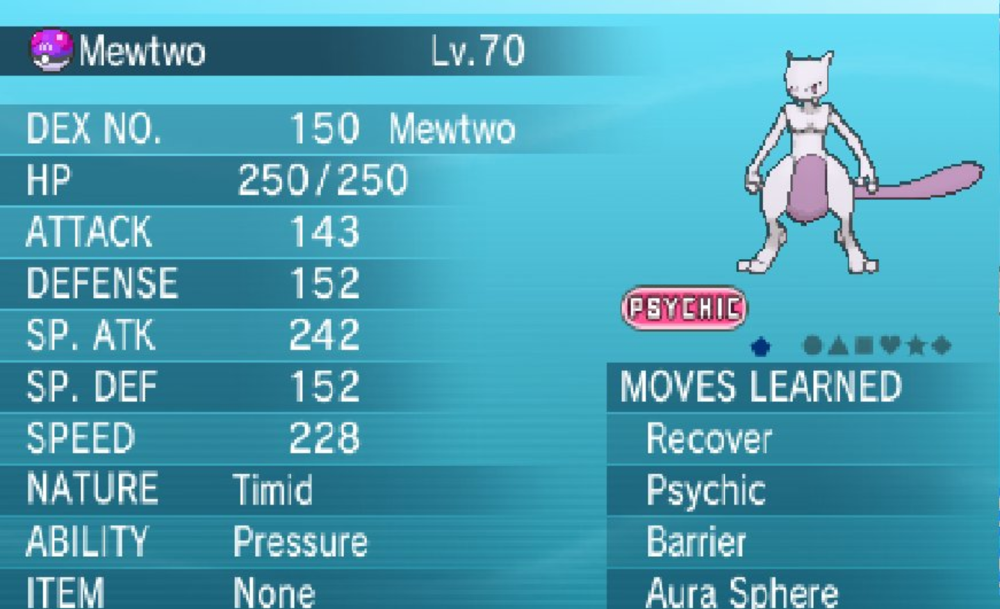

X/Y Main RNG Guide
- Prerequisits
- Initial Seed
- Wild RNG
- Stationary RNG
- Wondercard RNG
- Notes and Conclusions
Guide Navigation
Text Guide
This guide will cover the main RNG of Gen 6. This includes Wild(and Horde), Stationary, Event, Wondercard, and Egg. They all function extremely similarly, but each type of RNG will have its own section to cover its nuances.
Prerequisits
Pokemon X or Y: This guide will focus specifically on Pokemon X and Y, and while it can be used to RNG in Pokemon Omega Ruby and Alpha Sapphire, it is reccomended to just read the guide for those games instead.
Two Old Ambers: You must farm two Old Ambers from the final section in Glittering Cave. Aerodactyl is the Pokemon that takes the least amount of rare candies to find its exact stats for.
20-50 Rare CandiesThere's no two ways about this-- You just need a lot of Rare Candies. I get mine by transferring the Battle Points you gain passively from Pokemom Bank. I think Pickup Grinding is the best way to do this otherwise, though.
TSV: You can get shinies using wild or egg RNG, but to do so you'll need to know your TSV. The only way to do this without hacking is to RNG it at the start of the game.
Tools:
Finding your Initial Seed
There's two types of initial seed searching in Gen 6. Full search, and Quick search. A Full search can take a really long time to complete, and once it does, you can then do Quick Searches until you save the game. This is because a portion of the seed is determined by various factors when you last saved the game, and the rest is controlled by when you reset the game.
So, to find our seed, we need to first do a Full Search, and then when we have the seed, we can do Quick Searches repeatedly until we catch the Pokemon we want.
Full Search
To do a Full Search, you're going to need to have two Old Ambers and be saved right here, in front of the person who revives fossils. I would also reccomend getting rid of any other Fossil you may have by reviving it before doing this RNG, or selling it at a shop. This is so you do not have to navigate a menu to pick the Old Amber.

Once here, soft reset the game. Wait at the title screen and open Flowtimer. Use the variable offset section of flowtimer, and set the FPS to 59.8261. Once this is done, hit A on the title screen of the game.

Flowtimers' variable section and correct FPS value.

Pokemon Y's title screen
After you hit A on the title screen, load into the gameworld and revive both fossils as fast as possible. Make sure to hit B to not nickname the Aerodactyls. Once you have received both, start calculating their IVs. It can take anywhere from 5-25 rare candies to figure out their exact IVs.

Here is an example of what my IV calculator looked like after figuring out the IVs of one of my Aerodactyls while inputting it.
Once you have both Aerodactyls exact IVs, input them into 6genSeedSearch on the first tab.

This entire program is in Japanese, but it's very simple to understand and use. The top 6 boxes next to the "1" are the IVs of your first Aerodactyl. The two longer boxes underneath those 6 are your frame range that you received that Aerodactyl. The stuff next to the "2" is a repeat of all the same info for your second Aerodactyl.
The frame range setting on your very first search ever should be set from 0-1000 for the first Aerodactyl, and 1001-2000 for your second one. This search will take an extremely long time to complete. The length depends on both your frame range and how good your computer is. A search this long takes my computer about an hour and it's using so much processing power during the search that I basically cannot use my computer during that time. As for your 3DS, you can either power it off or put it into sleep mode. But make sure that you do not save after receiving the Aerodactyl.
Once the search is complete, you'll see a seed and the frames your received each Aerodactyl at. Take note of those, as now you can shrink your frame range on subsequent searches to be about +-100 of those frames. In addition, in my screenshot there's two of the same exact same seeds. This can happen sometimes, pay no mind to it. Lastly, I think once you find one single result, it's fine to immediately cancel your search.
Now that you have finished a full search, you can copy your seed and go into the right tab of of 6genSeedSearch. Paste your seed there, get back to the title screen of Pokemon X or Y, and we can move onto doing a Quick Search!
Some things to note about Full Search. You only have to do these after you save the game, AKA, after a succesful RNG where you catch or receive the exact Pokemon you wanted. In addition, with Bonziris tool, a small enough frame range, and a good enough computer, they do not take nearly as long as the first one you ever do might. My first one using this tool took about an hour and a half, but once I narrowed my frame range, they take about 20 minutes to find a seed now, which is really not so bad.
Quick Search
A Quick Search is the type of search you usually are doing when you're actually doing the RNG Manip. This section will just cover how to use the Quick Search, and not how to use it in tandem with Flowtimer. I'll cover that in the various RNG sections themselves.
In a Quick Search, you just need to use 1 Aerodactyl, however, if you succeed in the RNG, you're going to both keep the Aerodactyl and permanently lose all of the rare candies you used on it.
Instead, 6genSeedSearch will do the work itself. In the right most tab, make sure to click the right most radial button. Then, set the frame range to what you usually would for your first Aerodactyl during a full search, and pick Aerodactyl from the drop down. In addition, you have to pick its Nature. Now, both its Nature and Name are in Japanese. The nature can be found on this nature table on Bulbapedia, and since we are always using the same Pokemon, Aerodactyl, we always select "プテラ" from the dropdown. The Pokemon dropdown is directly next to the Lv box, which has a 20 in it, and the nature Box is directly below that.
In the seed box, we paste the seed we have most previously found. This is either found from a Full Search, or a previous Quick Search.

Here is an example picture of a Quick Search setup.
Now that you are all set up, you can actually do a Quick Search. The way do this starts the same as a Full Search. Hit A on the title screen and mash to receive an Aerodactyl as fast as you can. However, at this point we do not need a separate IV Calculator. What do you do is first input the current stats of the Aerodactyl in the boxes on the left, along with selecting the nature. Once this is done, you begin leveling Aerodactyl up, but instead of inputting its new stats, you put the amount they were increased by in the big box in the middle. You see these amounts upon level up, before they show you the new stats to you.

Here are where the initial stats I input for Aerodactyl are located.

Here are what the stat increases I was talking about look like.
Finally, here is what a finished Quick Search looks like. Every single line of numbers in the big box in the middle represents a level up I have done. Generally, I tend to level up about 9 times, but I feel that less is safer. Probably around 6 is fine. After you input as many stat increases as you feel, begin the search. This will finish very quickly, ranging from a few minutes to a few seconds depending on how long after your previous seed search this is taking place.
Now you know how to use the both the Full Search and the Quick Search in 6genSeedSearch, and you are ready to move on to RNG Manips!
Wild RNG
Wild RNG in XY is very interesting because you cannot pick which Pokemon spawns. In the case of a single wild Pokemon or a Horde, you can manipulate everything about a Pokemon except what species it is. It is also random wether or not Syncronize will occur. You have a 50/50 chance of it happening, and 3DSRNGTool cannot show in you in advance if it will happen. Wild RNG and Horde RNG work the same, and they are both fairly simple. In this example I will use Horde RNG. First, check if the route you're RNGing on has a horde spawn. If it does, these are the only possible Pokemon you can RNG here, as Sweet Scent and Honey both will only ever spawn Hordes. With that being said, you will need either a Pokemon with Sweet Scent or the item "Honey". In addition to this, if there is any weather on the route you're going to be RNGing in, Sweet Scent and Honey will both fail, meaning you can't RNG during that attempt.
To start, you're going to want to have completed a Full Search and a Quick Search, and immediately after the Quick Search we will do our RNG.
Paste your seed in the Quick Search section, and get setup to do another Quick Search like usual, but this time, we will incorporate flowtimer. Open Flowtimer and set it to the variable offset tab, and set it to 59.8261 as the framerate. Then, start Flowtimer at the same time as you hit A on the title screen. Try to get to the overworld as fast as possible, and preform your Quick Search as normal. While the Quick Search is going on, you'll notice Flowtimer is constantly counting up.

Once you've found your seed, you're going to open 3DSRNGTool and select the proper game, in my case, it's Y. Then, paste your seed found during this Quick Search in the "Seed" Box, as shown here. In addition, if you want a shiny, you'll type your TSV into the "TSV" box as well.
Then, once you have all that info in, set it up as follows: Click the Wild Tab, and if you are on a route without Hordes, select normal and your Sync nature if you're using it. It should be noted that Sync isn't guaranteed to work, it's still a 50/50 shot even during an RNG Manip. Once that is done, filter by IVs, Nature, Gender, and Shinyness, if you want it. This is to search for a specific type of Pokemon. So if you want good stats, or a specific nature or gender, fill the form out accordingly. In addition, the checkbox next to the "shiny only" box is to limit the selection even further to just square shinies. If you are using Horde RNG, everything in the latter half is the same, except you have a route to pick from. Don't select any Pokemon just yet, you'll only need that dropdown if you miss your target. While I am doing all of this selecting, I set a repel on, then I am running to my destination route in-game while typing this info in. I usually fly there, but if it's close enough like in this attempt(route 8), I just bike there.
Here is a picture of my setup using the Horde RNG method. I'll be aiming for this cluster of frames. Since it's a Horde, we have a 5 frame selection. They are all always 11 frames apart, so which one you pick does matter. Remember, you can only hit the same type of frame(even or odd) that you hit when you found your seed! So be sure to select one that matches. Once you have selected a suitable frame, see how many minutes / seconds it is into the game. Make sure you didn't pass that timeframe already by comparing it to the seconds counting upwards in flowtimer. It's handy to remember that 1 minute is 60 seconds, 2 is 120, 3 is 180, 4 is 240, and 5 is 300. It can be annoying to compare since flowtimer uses only seconds, whereas 3DSRNGTool uses minutes+seconds, but I'm sure you'll get by. If you haven't passed your time window yet, and you're at your location, then put your selected frame into the "Frame" box in Flowtimer, and hit submit. Then, go into the Pokemon or item menu, and sit on the Sweet Scent screen.
When the timer finishes, hit A to use Sweet Scent. Now, if you're going for a Shiny, you'll know if your target appeared right away or not. If your target does not appear, catch any one of the Horde Pokemon who appeared. Then, in the filters section, click the using stats bubble and in the wild encounter settings section, select the Pokemon you caught. Input the stats and nature you received, and you will see how far off you were from your target frame. 3DSRNGTool will tell you how far off you were from your target in the Shift/F column. From there, if it says you were + frames, subtract that amount of frames from your next target frame, and if you were - frames, add that amount to your next target. Rinse and repeat until you've got a shiny. In addition, I suggest aiming for the same frame spot every single time. My Target here was at around 20000, I wouldn't go more lower than 17000~ or higher than 22000~ after calibrating. So in this example, I have to subtract 246 from my target on my next attempt/
After that attempt, I just repeated the last two steps of finding a seed and target and attempting my RNG until I succeeded. It won't be too hard, and it's cool since you cannot pick your target, other than its stats, which is rare for RNG.
Stationary RNG
Stationary RNG in X/Y encompasses quite a bit of Pokemon, but in this guide I'll be showing Mewtwo. 3DSRNGTool has an extensive list of stationary Pokemon that count as stationary. Note, this is slightly different from "Event RNG", in which you receive a gift Pokemon from the delivery man. I think it is most useful for the legendary encounters. Despite the fact that they are all shiny locked, it will be easy to RNG Manipulate them to have perfect IVs and Natures, because all of the legendaries are guaranteed 3 perfect IVs at a minimum. Syncronize does work on many stationaries, but it's a 50/50 chance. 3DSRNGTool cannot tell us in advance if Syncronize will happen. It's still useful to increase your potential target frames, and I'll be using it in this guide as well. I would also, before you start, check when the Stationary is generated. It's usually the final text box. Just do a test encounter. Mewtwos is when you hit A on the "Mew" Diaologue.
To start, you're going to want to have completed a Full Search and a Quick Search, and immediately after the Quick Search we will do our RNG.
Paste your seed in the Quick Search section, and get setup to do another Quick Search like usual, but this time, we will incorporate flowtimer. Open Flowtimer and set it to the variable offset tab, and set it to 59.8261 as the framerate. Then, start Flowtimer at the same time as you hit A on the title screen. Try to get to the overworld as fast as possible, and preform your Quick Search as normal. While the Quick Search is going on, you'll notice Flowtimer is constantly counting up.
Once you've found your seed, you're going to open 3DSRNGTool and select the proper game, in my case, it's Y. Then, paste your seed found during this Quick Search in the "Seed" Box, as shown here.Then, once you've got that info in, set it up as follows: Click the Stationary Tab, and in the Stationary settings section select the Pokemon you are aiming for and input what Nature you're hoping to Syncronize as. Afterwards, in the Filters section, fill out what IVs you'd like along with any other specifications you have such as hidden power type. If you're not using Syncronize but want a specific Nature, select a Nature here, otherwise, if you are using Sync or don't care about Nature, leave it empty. Once it's all filled out, click the Calculate button. Then, results will show up. While I am doing all of this selecting, I set a repel on, then I am running to my destination route in-game while typing this info in. I usually fly there, but if it's close enough, I just bike there.
Here is a picture of my setup using the Stationary RNG method for Mewtwo. I'll be aiming for this cluster of frames. Right click one of them and click "set as target frame". Sometimes, if you're lucky like in this search, you'll see a few frames in a row that are all the same. I prefer to aim for these because it gives you more leniency, but it's not nessecary to do so at all. Remember, you can only hit the same type of frame(even or odd) that you hit when you found your seed! So be sure to select one that matches. Once you have selected a suitable frame, see how many minutes / seconds it is into the game. Make sure you didn't pass that timeframe already by comparing it to the seconds counting upwards in flowtimer. It's handy to remember that 1 minute is 60 seconds, 2 is 120, 3 is 180, 4 is 240, and 5 is 300. It can be annoying to compare since flowtimer uses only seconds, whereas 3DSRNGTool uses minutes+seconds, but I'm sure you'll get by. If you haven't passed your time window yet, and you're at your location, then put your selected frame into the "Frame" box in Flowtimer, and hit submit. After all that is done, I make sure to talk to the Pokemon to get to its final text box, so all I have to do is hit A to encounter it!
When the timer finishes, hit A to start the encounter. In order to know whether or not you've hit your target, you'll have to catch it. Don't expect to hit it first try, but if you do, congrats, you're done! If not, I'll show you how to make adjustments. In the filters section, click the using stats bubble, and fill out your Pokemons stats here. If you're using syncronize and get the Nature of your Syncronizer, check the "Assume Synced" Box in the Stationary setting section. If you're not using Sync or you are but don't get the sync nature, select the nature you get from the dropdown box. Once all that is done, click calculate to see where you landed. As you can see above, I missed by anywhere from 12-16 frames late. Since I was late, as denoted by the + in the Shift/F Column, I will subtract 14 from my next attempt, as that's the middle ground of this cluster I could've hit, and there's no way to tell exactly which one of these 5 I've landed on. If I was early, I'd have added the number of frames I was early by to my next attempt.
After that attempt, I just repeated the last two steps of finding a seed and target and attempting my RNG until I succeeded. In the very next attempt after this one, I actually hit my exact frame but did not get Syncronize, so I had to do it again. But with some perserverence I got my 5 IV Timid Mewtwo!
Wonder Card RNG
Wondercard gift RNG is a bit niche since it requires hacks to inject a wonder card, or for you to have left a Pokemon in your game for upwards of 5 years. Luckily I did just that with an old Genesect distrobution! These Pokemon cannot be Syncronized, and they all share the same long delay from the mystery gift woman, which is nice. 3DSRNGTool does not consider a delay, but it there most certainly is one. You'll most likely have to miss one target frame before succeeding.
To start, you're going to want to have completed a Full Search and a Quick Search, and immediately after the Quick Search we will do our RNG.
Paste your seed in the Quick Search section, and get setup to do another Quick Search like usual, but this time, we will incorporate flowtimer. Open Flowtimer and set it to the variable offset tab, and set it to 59.8261 as the framerate. Then, start Flowtimer at the same time as you hit A on the title screen. Try to get to the overworld as fast as possible, and preform your Quick Search as normal. While the Quick Search is going on, you'll notice Flowtimer is constantly counting up.
 Once you've found your seed, you're going to open 3DSRNGTool and select the proper game, in my case, it's Y. Then, paste your seed found during this Quick Search in the "Seed" Box, as shown here.
Once you've found your seed, you're going to open 3DSRNGTool and select the proper game, in my case, it's Y. Then, paste your seed found during this Quick Search in the "Seed" Box, as shown here.
Then, once you've got all that info in, set 3DSRNGTool up as follows: In the Event Settings section, select your pokemon Species, the number of random 31 IVs it's given, and any lock it has. If you're injecting an event, you can simply import the wondercard file and it will all automatically be filled out. I don't recall this exact Genesect event, so I just filled in the details that I knew. It has 3 31 IVS, and it's forced Nonshiny. After that, you can fill out the Filters section. Apply whatever IVs and Natures you would like here. Once it's all filled out, click the Calculate button. Then, results will show up. While I am doing all of this selecting I am running to my destination route in-game while typing this info in. I just go to the PokeCenter in the same town as the Fossil Revival lab.
Here is a picture of my setup using the Event RNG tab of 3DSRNGTool. I'll be aiming for these three frames, as they're all in a row and fill my requirements. I find it best to look for targets that have many frames in a row, as it makes your chances of hitting your target higher. Remember, you can only hit the same type of frame(even or odd) that you hit when you found your seed! So be sure to select one that matches. Once you have selected a suitable frame, see how many minutes / seconds it is into the game. Make sure you didn't pass that timeframe already by comparing it to the seconds counting upwards in flowtimer. It's handy to remember that 1 minute is 60 seconds, 2 is 120, 3 is 180, 4 is 240, and 5 is 300. It can be annoying to compare since flowtimer uses only seconds, whereas 3DSRNGTool uses minutes+seconds, but I'm sure you'll get by. If you haven't passed your time window yet, and you're at your location, then put your selected frame into the "Frame" box in Flowtimer, and hit submit. After all that is done, I make sure to talk to the wondercard lady and get to the final line of dialogue, which is where she says "I've got a Mystery Gift here with your name on it. Here you are!" So all I have to do is hit A to generate the line of text that says they've given me the Gift.(shown below).
When the timer finishes, hit A to receive your Pokemon. In order to check if you've hit your target, take a look at its stats. Input them, along with your Pokemons level and nature into 3DSRNGTools filter section. I use the "Using Stats" bubble for this. Once you're done inputting them, click calculate and see where you landed. If you've got your target, congratulations! Otherwise, I'll show you how to adjust for your next attempt. Here you can see I hit a Docile frame 42 frames early. In the Shift/F Column it will tell you if you're - or + a frame. Since I was early, on my next attempt I will add 42 to my target frame. If I was late, I would have subtracted that amount from my target frame.
After making your adjustment, you just rinse and repeat until you succeed. And here's my prize! A 5 IV Hasty Genesect with a 30 in HP! Not bad! Good luck on your wondercard RNG!
Notes and Conclusions
Gen 6 RNG is extremely tedious because of how long it takes to find a seed and how long you have to wait. There's also not a huge reason to do it, since basically everything is released in other, easier to RNG in games. However, I found it rewarding, and I had left many Pokemon like this Mewtwo and Genesect there since my first Y playthrough in 2013, waiting for RNG Abuse to be discovered! Just don't give up and join my discord for any questions.
Thank you for reading, I hope you succeed in getting your Pokemon. If you have any questions feel free to ask me on Twitter @im_a_blisy or join my discord. https://discord.gg/QchhXQv If you speak another language other than English fluently, and would like to translate this guide, please, contact me and I'd love to help :D